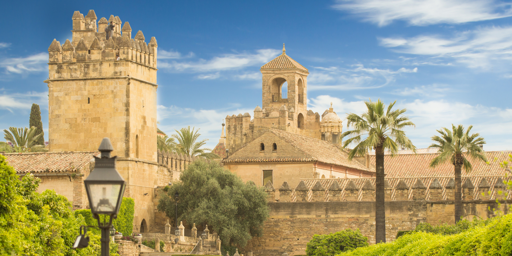
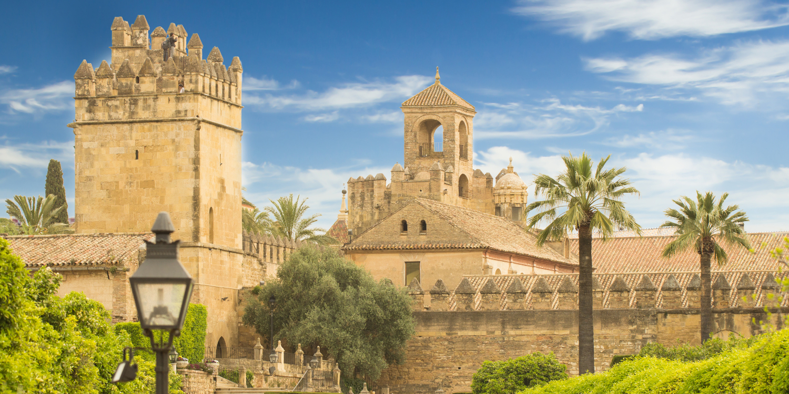

Casco Histórico de Córdoba
El Casco Histórico de Córdoba es uno de los más grandes y mejor conservados de Europa. Declarado Patrimonio de la Humanidad por la UNESCO, alberga calles estrechas, plazas encantadoras y monumentos emblemáticos que reflejan su rica historia multicultural.
Entre sus lugares más destacados se encuentran la Mezquita-Catedral, el Puente Romano, la Judería con su sinagoga, y los famosos patios cordobeses. Pasear por sus calles es sumergirse en siglos de historia y cultura.
 
